Demonstrações em vídeo de projetos reais: um sistema para escritórios de advocacia, um site para confeitaria, um site para academia e um app de treino para celular.
Plataforma de gestão para escritórios de advocacia: intimações capturadas do DJEN pelo número da OAB, calculadoras jurídicas com memória de cálculo, assistente que cita a fonte oficial, modelos que viram .docx, casos, agenda e indicadores.
Nomes, números de processo e dados de clientes aparecem desfocados nas gravações.
Site de uma página para confeitaria caseira: cheesecake em 3D que gira com o mouse ou o dedo, cardápio arrastável com inércia e pedido direto no WhatsApp, galeria com fotos que se revelam na rolagem e área de tele-entrega. Logo e identidade visual criados para o projeto.
Modelo 3D “Cheese Cake” por rebuilderai (Sketchfab), licença CC BY 4.0.
Site para academia com halter 3D que gira conforme a rolagem, vídeo de fundo no topo, modalidades em cards expansíveis, grade de horários interativa, perguntas frequentes, mapa e chamada para aula experimental pelo WhatsApp.
Marca fictícia criada para o portfólio. Fotos e vídeo de fundo do Pexels (licença livre).
App de treino instalável na tela do celular: meta semanal com anel de progresso, montagem de treinos a partir de uma biblioteca de exercícios, registro de séries e cargas com cronômetro de descanso, gráficos de evolução, mapa de músculos trabalhados, peso corporal, dieta, sequência de dias e ranking entre amigos.